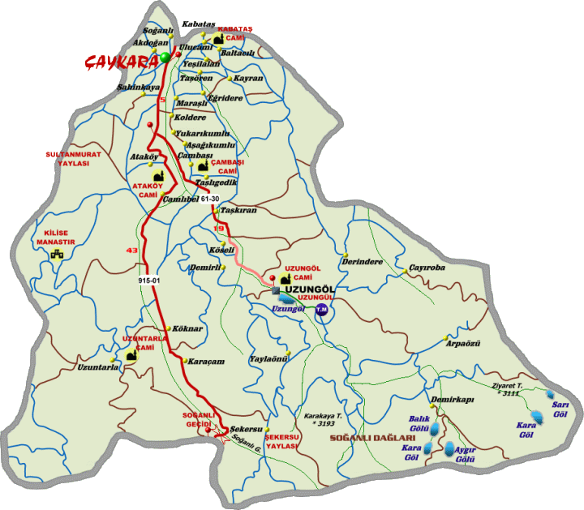

UZUNGÖL'E NASIL ULAŞILIR
Uzungöl’e ulaşabilmek için öncelikli olarak Trabzon İline ulaşmanız gerekmektedir. Rize, Artvin tarafından Uzungöl’e ulaşmak isteyenlerin Of İlçesinden Uzungöl yoluna saparak Uzungöl’e ulaşabilirler.
Şirin Beldemiz Uzungöl Trabzon İline 99 km mesafededir. Trabzon Merkez Çömlekçi Mahallesinde bulunan Çaykara Tur Minibüsleri ile günün her saatinde ortalama 20 dakikada bir Uzungöl’e servis vardır. Ayrıca Meydan mevkiinden de bazı firmalar tarafından Uzungöl’e minibüs seferleri düzenlenmektedir. Eğer özel aracınız yoksa bunlardan birini tercih etmek durumundasınız.Eğer özel aracınız ile Uzungöl’e ulaşmayı düşünüyorsanız size çok güzel bir gün geçireceğinizi tavsiye ediyoruz.
Trabzon-Rize Sahil yolunu takip ederek ve birbirinden güzel doğa manzarası eşliğinde Yomra, Arsin, Araklı ve Sürmene İlçelerini takip ederek Trabzon’un Of İlçesine ulaşmış olursunuz. Of ilçe girişinden sağ tarafa ayrılan yolu takip ederek Çaykara yoluna girmiş olursunuz.
Of İlçe Merkezi ile Çaykara arası 55 km’dir. Bu istikamette seyahat ederken birbirinden renkli ve birbirinden güzel çay bahçelerinin içinden geçeceksiniz. Yol boyunca sıra sıra dizilmiş çay fabrikalarını ziyaret edebilir hatta çay ihtiyacınızı bile karşılayabilirsiniz. Solaklı Vadisinin batısı istikametinde Çaykara’ya kadar geldikten sonra bu defa Solaklı Vadisinin Doğu yamacına geçmiş olursunuz.
Vadinin Doğu yamacında dere yataklarından akan birbirinden berrak buz gibi soğuk suların ve Solaklı vadisinin o muhteşem güzelliğinin üzerinizde bıraktığı büyük etki ile Çaykara’dan 20 dakikalık bir seyahat ile Uzungöl’e ulaşmış olursunuz.
Artık bundan sonrası size kalmış… İster muhteşem bir alabalık ziyafeti çekin, isterseniz yöremizin eşsiz mutfağının birbirinden güzel yemekleri ile tanışın…Ve yemekten sonra Turizm cenneti Uzungöl’ün her anını ve her dakikasını doyasıya yaşamaya çalışın.

Harita
Karayolu : Trabzon' dan Türkiye'nin hemen hemen bütün illerine karşılıklı otobüs seferleri vardır.
Deniz Yolu : Trabzon yaz aylarında düzenlenen feribot seferleri ile İstanbul ve İzmir'e bağlandığı gibi, yıl boyunca B.D.T. Ülkelerine çeşitli seyahat acentalarınca gemi ve otobüs seferleri düzenlemektedir.
Hava Yolu: Uluslararası trafiğe açık Trabzon Hava Limanından yurdumuzun bir çok iline hava ulaşımı sağlandığı gibi, Almanya, Hollanda, ve Komşu Ülkeler ile de karşılıklı seferler yapılmaktadır.
" Uzungöl, İnanlar Hotel'de Bir Başka Güzel "